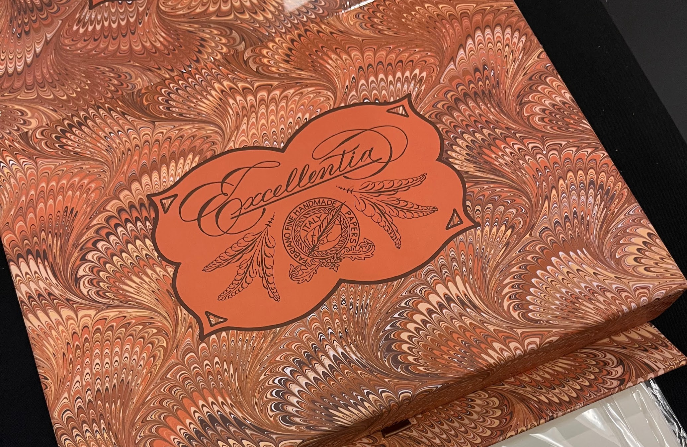

Welcome
Welcome to the page I have to share my interests in fountain pens. As this site grows there will be a catalog of my collection and I will also introduce its parts and accessories. I’m looking forward to collecting some history, stories, and facts about the fountain pen, and share appreciation of how this world-wide industry has grown to what it is today.
There are a number of probable reasons why people have shy away from fountain pens, including:
- Assumptions that any fountain pen is expensive
- Ballpoint pens are much more convenient
- If they don't click, they are not dependable
- Fountain pens require you to mess with ink
My hope is to help introduce the fountain pen to anyone who hasn't either had success writing with one, or anyone with a few extra dollars who has not tried one out. Below are a few cheap pens I have personal experience with and my recommendations.
| ㅤ | Pilot Varsity1 | Platinum Preppy (Fine)2 | Platinum Prefounte3 |
|---|---|---|---|
| Country of Origin | Japan | Japan | Japan |
| Official Product Page | pilotpen.us | platinumpenusa.com | platinumpenusa.com |
| Review | unsharpen.com | unsharpen.com | unsharpen.com |
| Price | $3.30 | $7.00 | $11.00 |
| Personal Rating | 5 stars | 3 stars | 3 stars |
| Where to buy | Goulet Pens or Amazon | Goulet Pens | Goulet Pens |
1 In my personal experience, the Pilot Varsity never fails, it writes smoothly, and does not skip. It is my top recommendation at its very economical price. The only downside is that it’s not designed to be refilled, however it can be done.
2 The month old Preppy in my possession regularly has to be primed on scratch paper before ink starts flowing, which is frustrating It also skips a lot, therefore I have given it 3 stars.
3 The Prefounte has the same feed and nib as the preppy, and every part is interchangeable, however it comes in classier colors and has a metal clip instead of the preppy’s plastic one. This model pen might get better Quality Control, because I haven’t had any problems with it.
More exciting content to come
I have located some very interesting videos about the history of limited edition pens which I'm looking forward to share on this site. As skills develop with back end and front end scripting, I am looking to add a a feature for recording and displaying maintenance logs for each pen in a collection.